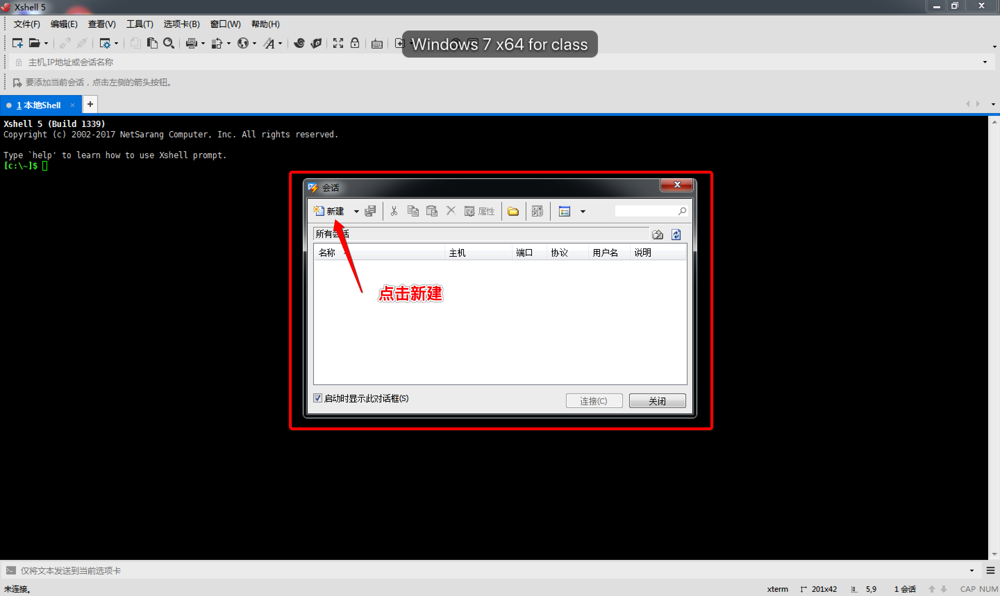
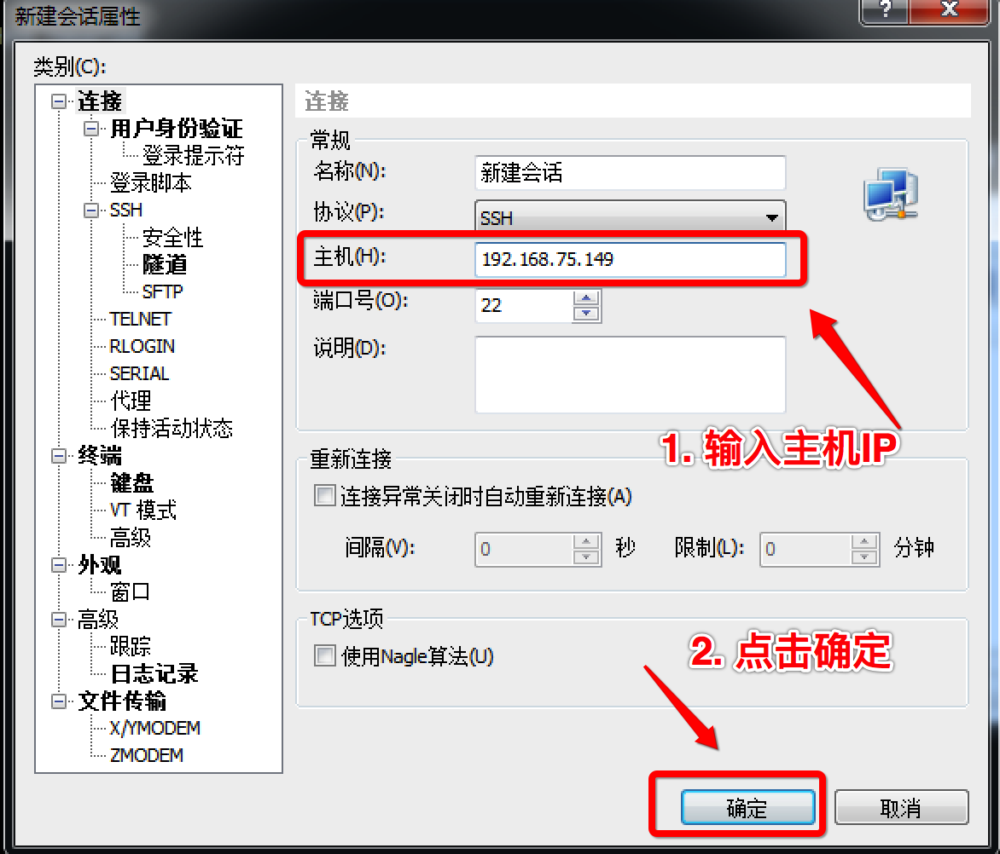
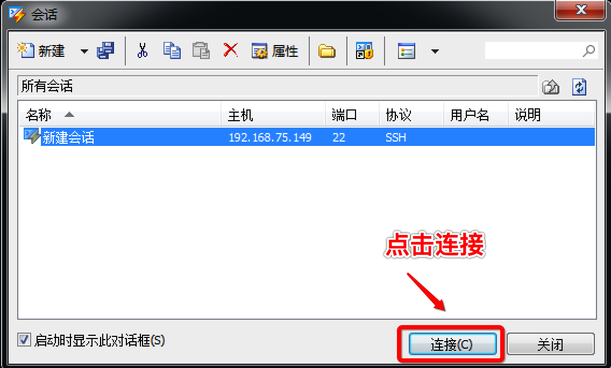
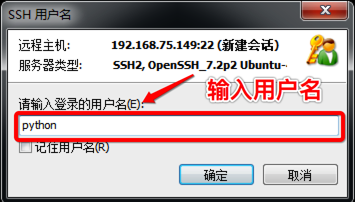
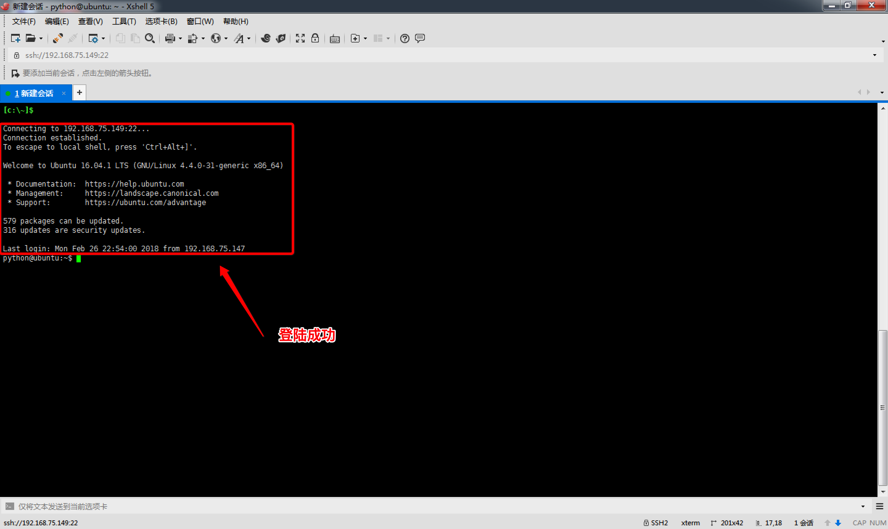
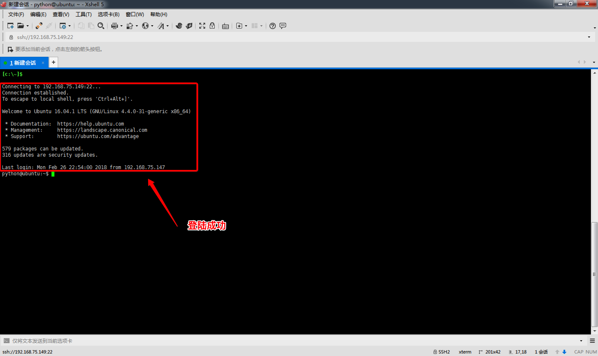

常用ssh服务
1. ssh介绍
SSH为Secure Shell的缩写，由 IETF 的网络工作小组（Network Working Group）所制定；SSH 为建立在应用层和传输层基础上的安全协议。
SSH是目前可靠的，专为远程登录会话和其他网络服务提供安全性的协议。常用于远程登录，以及用户之间进行资料拷贝。利用SSH协议可以有效防止远程管理过程中的信息泄露问题
使用SSH服务，需要安装相应的服务器和客户端。客户端和服务器的关系：如果，A机器想被B机器远程控制，那么，A机器需要安装SSH服务器，B机器需要安装SSH客户端。
2. 远程登陆
安装 SSH 服务器:
sudo apt-get install openssh-server
2.1 Linux\Mac 远程登陆服务端
远程登陆命令如下：
ssh 用户名@IP
使用ssh访问，如访问出现错误。可查看是否有该文件 ～/.ssh/known_ssh 尝试删除该文件解决。
2.2 Windows 远程登陆服务端
首先安装 SSH 客户端软件, 类似软件有多款 OpenSSH、SecureCRT、Xshell、Putty等, 我们这里选择使用 Xshell来演示下.




 

3. 文件上传与下载
3.1 Linux\Mac 命令方式
远程拷贝文件,scp -r 的常用方法：
- 使用该命令的前提条件要求目标主机已经成功安装 openssh-server;
- 使用格式：
scp -r 目标用户名@目标主机IP地址：/目标文件的绝对路径 /保存到本机的绝对/相对路径
举例：scp -r itcast@192.168.1.100:/home/itcast/QQ_dir/ ./mytest/lisi
在后续会提示输入“yes”此时，只能输“yes”而不能简单输入“Y”
注意: 拷贝单个文件可以不加 -r参数，拷贝目录必须要加。
本地文件复制到远程：
scp FileName RemoteUserName@RemoteHostIp:RemoteFile
scp FileName RemoteHostIp:RemoteFolder
scp FileName RemoteHostIp:RemoteFile
例子:
我们在桌面上创建一个 python 文件 index.py 文件, 我们将其上传到远程主机上, 可使用命令:
scp index.py python@192.168.75.149:index2.py
文件 index.py 上传到远程主机之后, 对应的文件的名字为 index2.py, 默认是上传到 python 用户的 home 目录下, 如果我们想上传到远程主机的桌面上, 可指定上传目录, 命令为:
scp index.py python@192.168.75.149:Desktop/index2.py
本地目录复制到远程:
scp -r FolderName RemoteUserName@RemoteHostIp:RemoteFolder
scp -r FolderName RemoteHostIp:RemoteFolder
例子:
我们在桌面创建 a/b/c, 并在 a 目录下 创建 index.py 文件, 我们现在将该目录上传至远程主机, 命令为:
scp -r a python@192.168.75.149:b
默认目录上传到远程主机 python 用户的 home 目录下. 如果我们想上传到 python 用户的桌面目录下, 命令如下:
scp -r a python@192.168.75.149:Desktop/b
远程文件复制到本地：
scp RemoteUserName@RemoteHostIp:RemoteFile FileName
scp RemoteHostIp:RemoteFolder FileName
scp RemoteHostIp:RemoteFile FileName
远程目录复制到本地：
scp -r RemoteUserName@RemoteHostIp:RemoteFolder FolderName
scp -r RemoteHostIp:RemoteFolder FolderName
3.2 图形界面方式(了解)
我们在 Ubuntu\Mac 通过命令可以上传下载文件, 也可使用图形界面的方式, 我们这里推荐一款 ftp 客户端软件 filezilla, 该款软件有 Linux、Mac、 Windows 3个版本. Filezilla 支持 SFTP(基于 SSH 协议的 FTP). Linux 的 SSH 服务包含了 SFTP 功能.软件启动界面如下: